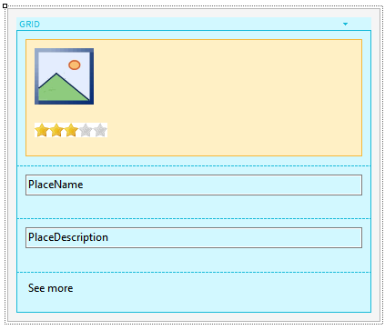
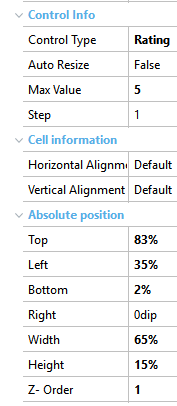

The Rating control allows displaying a numeric variable with a "star control." It is useful when creating polls or when you want the user to rate items. ScopeGenerators: Android, Angular, Apple, Java, .NET, .NET Core PropertiesMax ValueStepAssociated ClassThe Rating control has a class of the theme that allows changing its appearance. SamplesSuppose there is a reality where people rate tourist places, giving them 0 to 5 stars. Next, a screen will be created where the average rating results will be shown. There is a transaction where you save the Name of the place, its description, photo, and the average rating of the place. Create the following Panel with this Layout:  Inside the Canvas, place the Image Attribute of the tourist site and the attribute that will be used to show the stars; it will have the following properties:  In this way, the control will be shown above the image and in its lower left corner.
| ||||